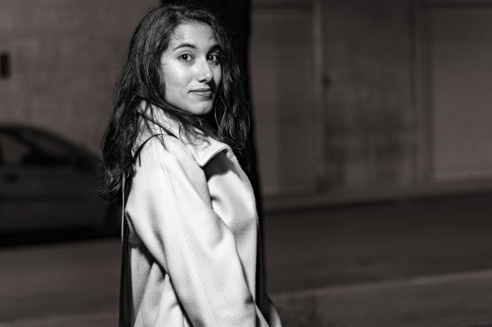
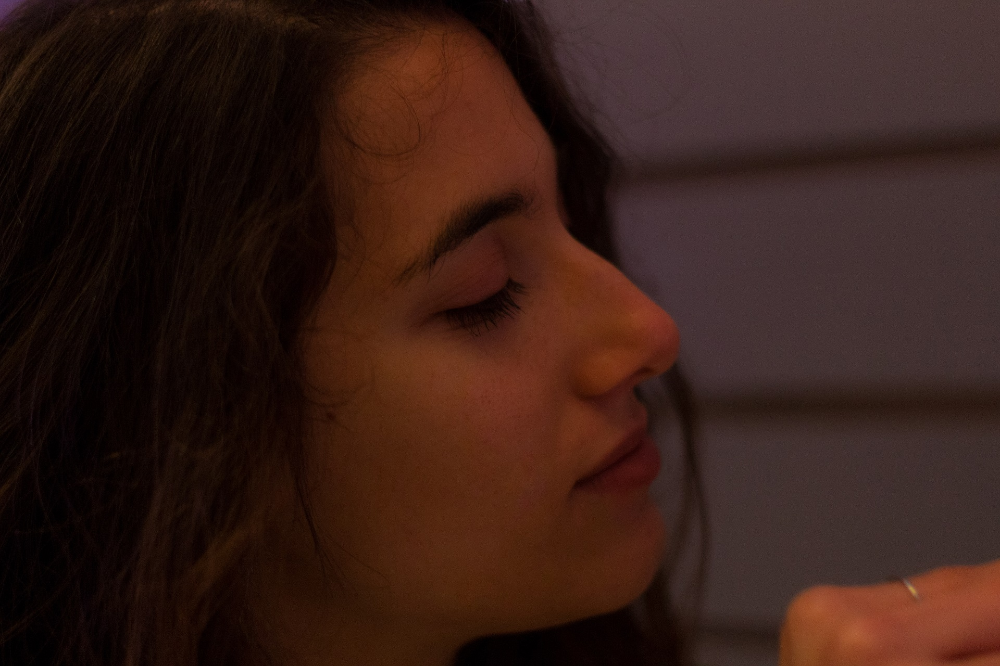

Art
Qui potrete trovare qualsiasi riferimento all'arte, con particolari considerazioni sul Rinascimento italiano.
Inoltre troverete i caratteri generali e le opere più famose di alcuni grandi artisti del XV e XVI secolo, come Leonardo Da Vinci, Michelangelo Buonarroti, Raffaello Sanzio e Sandro Botticelli.
Scopri di più...
Lifestyle
In questa sezione potrete trovare tutto ciò che riguarda gli outfit ideali per ogni vostra giornata: da abiti eleganti per una cerimonia, a completi sportivi per fare jogging.
Inoltre troverete tanti outfit divisi per stagione, con le categorie autunno/inverno e primavera/estate.
Scopri di più...

Forum
Avete dubbi su alcuni outfit?
Volete conoscere altri con le vostre passioni?
La sezione Forum fa per voi! Qui troverete anche una sezione speciale, che coniuga
la moda e l'arte in un connubio che non dimenticherete mai più.
Scopri di più...